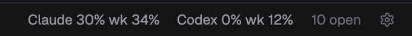
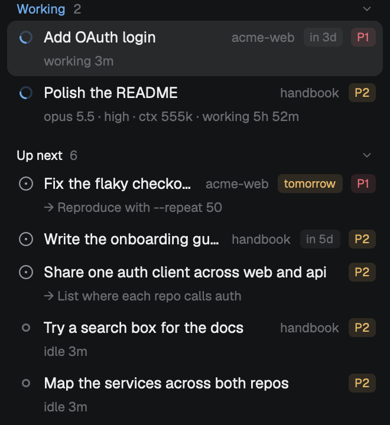

You plan. Your agents move the task. You close it.
tasker is a light, local task manager for the coding agents you run in the Herdr app: projects, repositories and tasks, ordered by what needs you first. One mod and one file you own; no service, no account.

The list on the left, the agent in the middle, and on the right everything about the selected task: its agent's model and effort, the last lines of its screen, its changes, and a box to send it the next instruction.
Four ways to look at the same work
Everything reads Herdr's live agents and one file of tasks, so the views never disagree. Click a task anywhere and the detail follows.

Now
What moves work forward, in order. An agent's question sits in the row itself, so you can answer without hunting for the tab. Not now? Put a task off with Later: it waits out of the way and comes back on its day, with a reminder.

Projects
Projects, their repositories (branch, commits not pushed, uncommitted changes) and their tasks. Terminals that belong to no task show up under their repository with a Make task button. Each project gets its own board, and its own terminal, tasks and agents, which work across all its repositories. Want both lists at once? Stack Projects over Now in the settings.

Board
One column per status, and a board per project in a tab of its own. Agents started from a terminal are cards too. Drag a card to another column or into place among the others, and watch the Doing column count against the limit you set.

Task detail
Everything about one task, next to its agent.
- The question the agent is waiting on, and the last lines of its screen.
- Model, reasoning effort, context size and turn for Claude Code and Codex, plus sub-agents.
- Changes in its folder, its pull request and CI checks, with one click to ask for a PR or send the failures back.
- A box to send the agent your next instruction, without leaving the list.
Tasks follow their agents
You plan; the agents' state moves the rest. No pipeline to set up, and nothing is marked done unless you do it.
- InboxIdeas and imported GitHub issues.
- NextYou plan it: drag it into place, give it a due date.
- DoingMoves here by itself when its agent starts working.
- ReviewMoves here by itself when its agent stops.
- DoneOnly you mark it done, after looking.
Keeps up with how you work
The parts that save a trip to another window.

Resume after a restart
tasker remembers the Claude Code or Codex conversation each task's agent was in. After a reboot, or once you closed its tab, Resume agent picks it up where it was, in its folder, tied to the task again.
Plan limits at a glance

Claude Code's and Codex's 5-hour and weekly limits in the status bar, amber from 70% and red from 90%; hover for when each resets. tasker asks your own claude CLI, reads no token and sends no prompt. Off until you turn it on in the settings.

Tasks or terminals, the same flow
Started an agent in a terminal on a hunch? Its tab is a task already, a light one named after what the agent calls its work, moving from Doing to Review with it, on the list and the board. Give it a note, a place or a later day and it's yours; leave it, and it goes away when its agent quits or its tab closes. Plan with tasks when you want the details; work with terminals when you don't.
Issues from GitHub and Linear
Import open GitHub issues of a repository, or the Linear issues assigned to you, into the Inbox. Linear's most urgent come first, with their due dates, and the agent you start gets the issue in its first message.
Ten minutes to your first task
The tutorial goes from install to a reviewed, finished task. The examples are workflows you can copy: a bug fixed in its own worktree, GitHub issues turned into a plan, an agent that files its own follow-ups.